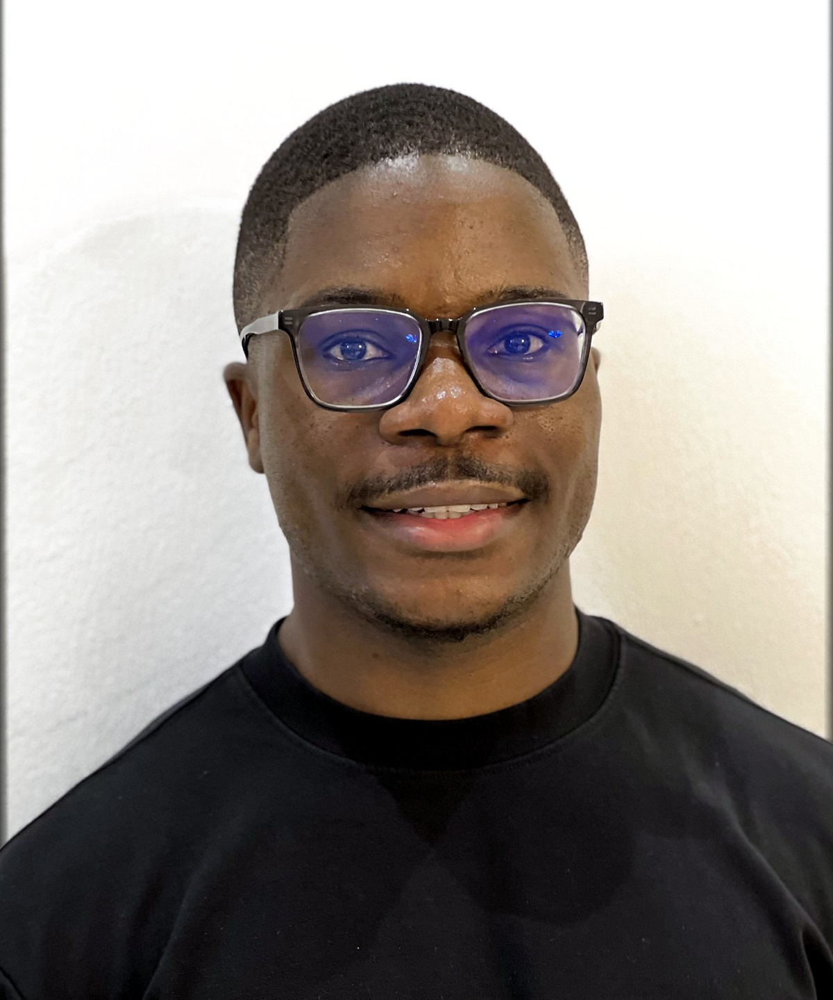
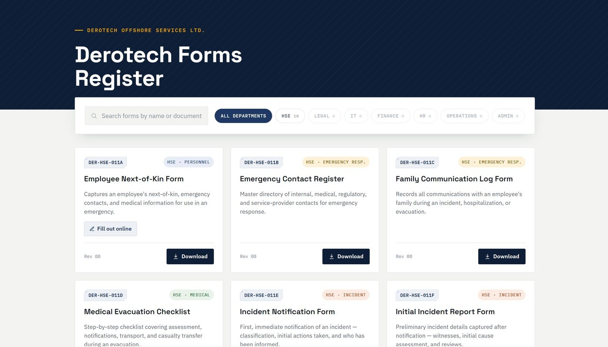
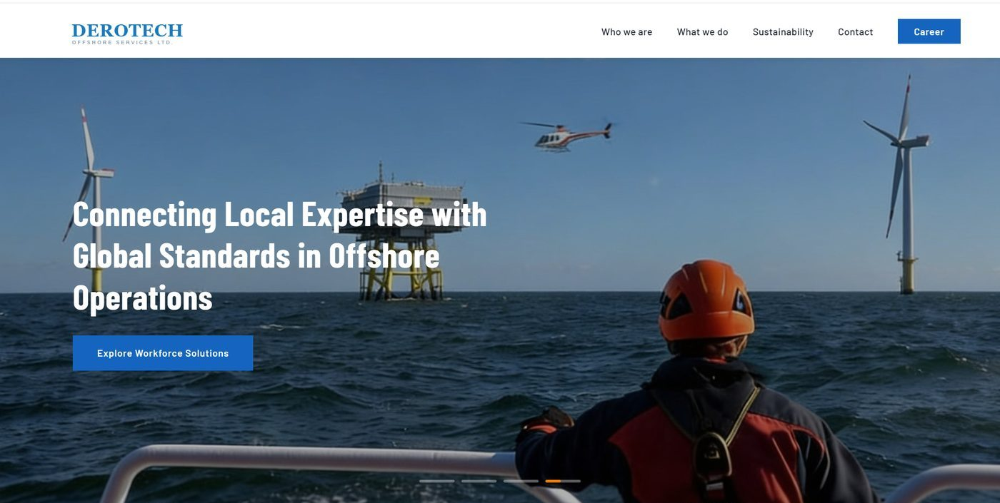
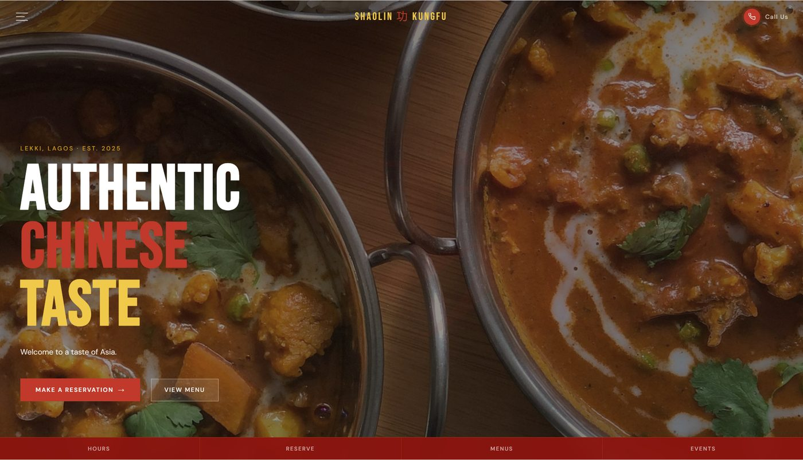
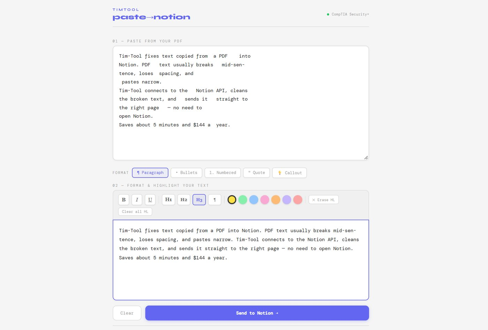

SCROLL TO PLAY — PRODUCT & UX DESIGNER · GROWTH & MARKETING
I turn problems into working products.
Timileyin Sulemon — a researcher, designer, and builder who takes a real problem from a blank page to a live, working product, directing AI-assisted development from concept through to release. The same research-first approach runs my marketing work — data-driven paid campaigns and brand strategy, not guesswork. First-Class Honours graduate in Media & Communication.
About
My creative streak started at eight, with a saxophone — and it never really left. Throughout university it kept showing up, in visual and written work as much as music, and by the end I was awarded Best Dissertation in the School of Computing & Digital Media.
After graduating, I realised creativity on its own wasn't enough — I wanted to point it at problems businesses actually have. So I took courses in brand marketing, UI/UX, and how to direct AI tools effectively without losing creative control or cutting corners.
Friends would call me stubborn. I have a hard time letting a problem go until I've actually found what's causing it — and I don't think there's much that's truly impossible, just things nobody's worked at long enough.
I studied Media & Communication, not computer science — I learned to build by pointing AI tools with the same precision I once pointed a camera: frame the problem, direct every detail, and cut until it works. I research the problem, design the solution, and direct the build end‑to‑end.
That process now runs the digital side of a live company, has turned a restaurant with zero online presence into one that takes bookings and orders, and built multiple tools that quietly save me real time and money every week.
On the marketing side, I've planned and run paid media campaigns (Meta & Google Ads) freelance for independent brands — testing creative variants and refining targeting against engagement data — and delivered social media and competitor analysis for Sudocrem's national "Not Just for Babies" campaign, work that led directly to a job offer from the people I worked with.

Case study 01
Derotech Offshore Services
Derotech had no real digital presence, and the internal and external forms the business relied on were paper-based — slow, easy to lose, and impossible to secure properly.
I designed and built the company website end-to-end, then identified the forms problem myself and built DerotechForms, a secure remote-access portal now used company-wide for internal and external submissions, with department-scoped admin logins for uploading, replacing, and retiring individual forms — all as the only person handling digital work at the company.


Case study 02
Shaolin-Kungfu Chinese Restaurant
A newly opened restaurant had no website, no online menu, and no way to take a booking or a delivery order without a phone call. I pitched them on the spot and secured the project myself.
I designed and built a full site with an interactive menu, a table reservation system, and integrated ordering links to Chowdeck and Glovo — end-to-end, from first sketch to a live site.

Case study 03
Tim-Tool
My own recurring problem: text copied from a PDF into Notion arrived broken — stray line breaks, extra spaces, and using only a sliver of the page width. Fixing it by hand ate into study time.
I built a tool with a direct Notion API connection that reformats the text and pastes it into the right page automatically — no need to even open Notion. It saves roughly 5 minutes per use and about $144 a year against a paid alternative.

Case study 04
Growth & Paid Media Campaigns
Alongside product work, I plan and run data-driven marketing campaigns freelance — treating each one as a hypothesis to test rather than a one-off brief.
For Sudocrem's national "Not Just for Babies" campaign (Teva Pharmaceutical), I delivered social media and competitor analysis and developed the campaign and content strategy. I've also planned and run Meta and Google Ads campaigns for independent brands, testing creative variants and refining targeting against engagement data to lift conversion rates.
Other work
Skills and interests outside of product design.
Exploring Spirituality
Documentary, shot on a Sony A7, cut in Adobe Premiere Pro.
Watch on YouTube ↗Homelessness in Islington
Podcast, produced and mixed in Adobe Audition.
Christmas Foodbank, Stockwell
Running 5+ years. I lead all media: photography, video, audio, and social.
Saxophone
Playing since childhood — the same patience that goes into a good interface.
Get in touch